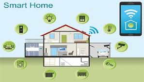

Ai Brain
Having an intelligent AI monitoring your house can help with identifying friends and family to
identifying a burglar

Audio recordings
Saved audio files and audio recordings of people's voices can be beneficial to help identify whose trying
to get into the house and even catch audio of a crime scene that has happened across the street
Self protection
Automatic doors, windows, and shutters. They can help when hands are full with groceries, if you ever
leave your house and forget to lock the doors, or if animals are constantly trying to get in.

Voice clock and calendar
An automated reminder for events throughout the day, even as small as needing to take your medicine on time,
and with our varity of languages even grandparents or parents who don't speak english can be notified
throughout the day
Automatic stove
With an automatic stove you'll never have to worry about wondering if your dishes are nurtritious or ever
have to worry about having to make food at all
Weather box
Not knowing if its gonna rain or snow, or if its going to be over 100 degrees. Then the included weather box
can help you determine what to wear and what to expect out of the day
Automatic garage door
Nobody home to help you open the garage? Well you'll never have to worry about it again. It can memorize your
liscense plate on your car and make sure that your car is the only one that could park in the garage